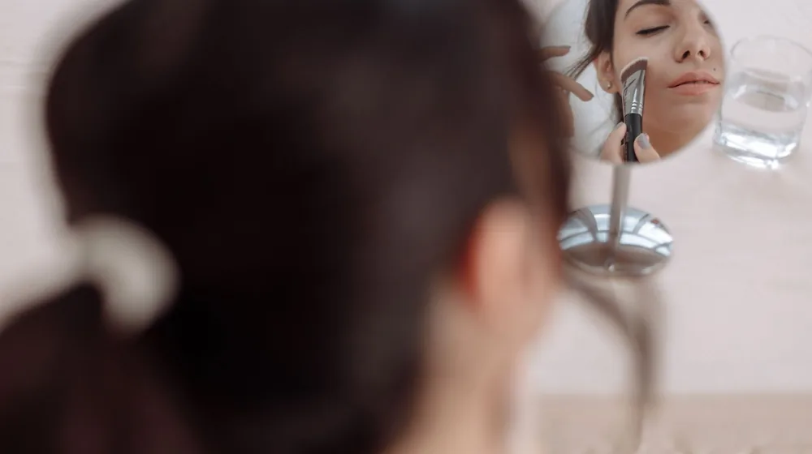

쿠션 파운데이션 유목민 주목! 찰떡같이 밀착되는 꿀팁 루틴
사진: George Milton / Pexels (무료 이미지, 출처 표기)
쿠션 파운데이션, 간편해서 애용하지만 혹시 들뜨거나 지속력이 아쉽다고 느끼셨나요?

매일 아침 바쁜 시간을 쪼개 메이크업을 하지만, 오후만 되면 쿠션 파운데이션이 들뜨거나 다크닝 현상이 나타나 속상할 때가 많습니다. 단순히 제품 문제가 아니라 바르는 루틴에 숨겨진 비밀이 있을 수 있습니다. 이 글에서는 기초부터 마무리까지 피부에 찰떡같이 밀착되고 오랫동안 유지되는 쿠션 루틴을 소개해드립니다. 이제 당신도 '쿠션 유목민' 생활을 끝낼 수 있습니다.
쿠션 파운데이션, 왜 들뜨고 지속력이 짧을까?
쿠션 파운데이션이 들뜨거나 지속력이 짧은 데에는 몇 가지 일반적인 원인이 있습니다. 첫째, 피부에 수분이 부족하거나 각질이 제대로 정돈되지 않은 경우 파운데이션이 피부에 고르게 밀착되기 어렵습니다. 둘째, 유분기가 과도한 피부에 유분 함량이 높은 쿠션을 사용하면 쉽게 무너지기 쉽습니다.
셋째, 너무 많은 양을 한 번에 두껍게 바르거나 퍼프를 문지르듯이 사용하는 잘못된 도포 방식도 원인이 됩니다. 마지막으로, 자신의 피부 타입과 맞지 않는 쿠션 제품을 선택하는 것도 주요 요인 중 하나입니다. 이러한 문제점들을 개선하면 쿠션의 효과를 극대화할 수 있습니다.
완벽 밀착 쿠션 루틴: 기초 스킨케어 단계
쿠션의 밀착력과 지속력을 높이려면 기초 스킨케어 단계가 중요합니다. 먼저 세안 후 토너 패드나 가벼운 토너를 사용하여 피부결을 정돈하고 남아있는 노폐물이나 각질을 부드럽게 닦아냅니다. 이는 쿠션이 피부에 매끄럽게 발리는 데 도움을 줍니다.
다음으로 히알루론산 세럼이나 수분 크림 등으로 피부에 충분한 수분을 공급하여 속건조를 방지합니다. 이때 너무 유분기가 많거나 끈적이는 제품은 피하는 것이 좋습니다. 마지막으로 선크림이나 메이크업 베이스 겸용 프라이머를 소량만 사용하여 피부를 보호하고 메이크업의 베이스를 단단히 다져줍니다. 각 단계마다 제품이 충분히 흡수될 시간을 주는 것이 중요합니다.
쿠션 파운데이션, 이렇게 발라야 착붙!
쿠션 파운데이션을 올바르게 바르는 방법은 밀착력과 지속력에 큰 영향을 미칩니다. 먼저 퍼프에 쿠션을 소량만 덜어내는 것이 중요합니다. 처음부터 너무 많은 양을 찍어내면 두껍게 발릴 수 있습니다. 쿠션은 얼굴 중앙(나비존)부터 시작하여 바깥쪽으로 톡톡 두드리듯이 넓게 펴 바릅니다.
얼굴 외곽 부분은 퍼프에 남은 소량의 쿠션으로 가볍게 터치하여 자연스럽게 그라데이션되도록 합니다. 한 번에 두껍게 바르기보다는 얇게 여러 번 레이어링하는 것이 들뜸 없이 자연스럽게 밀착되는 비결입니다. 얼굴의 굴곡진 부분까지 퍼프를 섬세하게 사용하여 꼼꼼하게 두드려주면 밀착력이 더욱 높아집니다.
지속력 높이는 마무리 단계와 수정 화장 팁
메이크업 지속력을 높이기 위한 마무리 단계도 놓칠 수 없습니다. 쿠션을 바른 후 유분기가 많이 올라오는 T존이나 나비존 위주로 투명 파우더를 소량만 사용합니다. 큰 브러시로 가볍게 쓸어주듯이 바르면 뭉치지 않고 보송하게 마무리할 수 있습니다. 건성 피부인 경우 이 단계를 생략하거나 아주 최소한의 양만 사용하는 것이 좋습니다.
메이크업 픽서를 뿌려 쿠션을 더욱 단단히 고정하는 것도 좋은 방법입니다. 수정 화장을 할 때는 기름종이로 올라온 유분을 먼저 제거합니다. 그 후 미스트나 가벼운 수분 크림으로 피부를 살짝 정돈한 뒤, 깨끗한 쿠션 퍼프나 스펀지로 아주 소량의 쿠션을 들뜸 없이 톡톡 두드리듯 얹어줍니다. 이때 너무 많은 양을 덧바르면 오히려 두꺼워지거나 뭉칠 수 있으니 주의합니다.
내 피부 타입에 맞는 쿠션 선택 가이드 (2026년 11월 기준)
자신에게 맞는 쿠션 파운데이션을 선택하는 것은 완벽한 피부 표현의 첫걸음입니다. 2026년 11월 기준으로 다양한 제형의 쿠션들이 출시되어 있으니, 아래 표를 참고하여 자신의 피부 타입에 맞는 제품을 골라보세요. 정확한 제품 정보는 각 브랜드 공식 홈페이지에서 확인하시길 권장합니다.
쿠션 컬러를 선택할 때는 얼굴과 목의 경계선인 턱선에 소량을 발라보고, 자연스럽게 어우러지는 색상을 고르는 것이 가장 좋습니다.
자주 묻는 질문
- Q: 쿠션 퍼프는 언제 교체해야 하나요?
- A: 위생과 밀착력을 위해 쿠션 퍼프는 최소 일주일에 한 번 세척하고, 한 달에 한 번은 새것으로 교체하는 것을 권장합니다.
- Q: 컨실러는 쿠션 바르기 전/후 언제 사용해야 하나요?
- A: 일반적으로 쿠션으로 넓은 부위의 톤을 보정한 후, 가리고 싶은 잡티나 다크서클 부위에 컨실러를 톡톡 두드리듯 소량 사용하는 것이 자연스럽습니다.
- Q: 쿠션만 발라도 괜찮을까요?
- A: 피부 컨디션이 좋고 가벼운 커버를 원한다면 쿠션만 발라도 괜찮습니다. 하지만 메이크업 지속력을 높이고 싶다면 기초 스킨케어와 마무리 단계(파우더, 픽서 등)를 병행하는 것이 좋습니다.
🔗 이 글도 함께 보면 좋아요: 겨울철 피부 건조, 이 3가지 성분부터 확인! 완벽 보습템 고르는 법 비교
관련 추천 상품
쿠션 파운데이션, 베이스 메이크업 관련 인기 상품 보러가기
이 포스팅은 쿠팡 파트너스 활동의 일환으로, 이에 따른 일정액의 수수료를 제공받습니다.